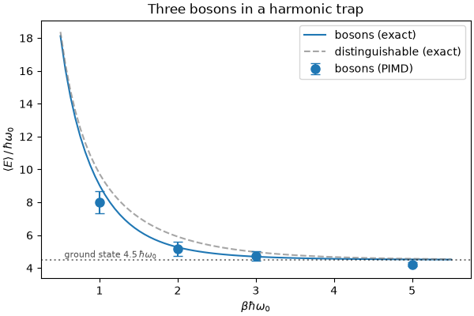
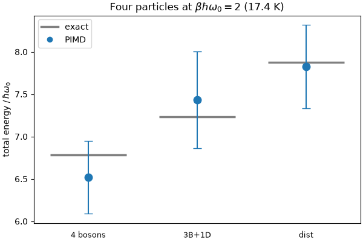
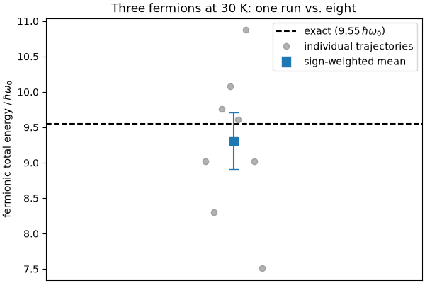
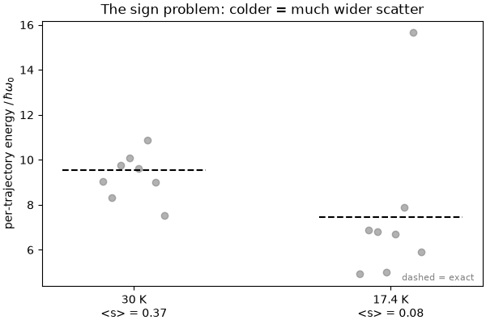

Note
Go to the end to download the full example code.
Path integral molecular dynamics of bosons and fermions¶
- Authors:
Barak Hirshberg @bhirshberg
This example shows how to run path integral molecular dynamics (PIMD)
simulations of indistinguishable particles – bosons and fermions – with
i-PI, and how to analyze the output. It is a modernized version of the
“Bosonic and Fermionic PIMD” module of the PIQM 2023 tutorial, updated to i-PI 3.x.
We simulate a few non-interacting particles (\(m=1\)) in a three-dimensional isotropic harmonic trap with \(\hbar\omega_0 = 3\,\mathrm{meV}\) and study how quantum statistics changes the average energy. Most of the tutorial uses three particles; the statistics-comparison section uses four, so the energy differences between the cases are large enough to see clearly. We work in the natural dimensionless inverse temperature \(\beta\hbar\omega_0 = \hbar\omega_0 / k_\mathrm{B}T\), so the whole problem is controlled by a single number.
The tutorial is built in three steps:
Bosons. Switch on bosonic exchange with a one-line tag and trace the energy as a function of temperature, comparing against the exact result.
Switching statistics. See how trivially the same input flips between distinguishable particles, bosons, and mixtures, and compare their energies at one temperature.
Fermions. Obtain fermionic averages by reweighting, meet the sign problem, and learn how to get an honest error bar by averaging several trajectories.
The forces come from the built-in harmonic potential of i-PI’s Python
driver, so the whole recipe installs from PyPI—no compiled driver required.
import numpy as np
from data import analysis, plots
Indistinguishable particles and ring-polymer exchange¶
In path integral molecular dynamics each quantum particle is represented by a ring polymer of \(P\) beads. For distinguishable particles every ring polymer is closed on itself. Quantum exchange between identical particles is captured by also allowing ring polymers of different particles to be connected into longer rings. Averaging over all such connectivities with the appropriate weights yields bosonic statistics; fermions additionally require a sign for every pair exchange.
In i-PI, this is switched on with a single tag inside <normal_modes>:
<normal_modes propagator='bab'>
<nmts> 10 </nmts>
<bosons> [0, 1, 2] </bosons>
</normal_modes>
<bosons> holds the (zero-based) indices of the atoms that participate in
bosonic exchange. An empty list recovers distinguishable particles; listing a
subset gives a mixture. The exchange spring potential is evaluated with the
quadratic-scaling algorithm of Hirshberg et al.
(PNAS 2019) and Feldman &
Hirshberg (JCP 2023).
Note
Bosons require propagator='bab'. i-PI’s default free ring-polymer
propagator is the exact normal-mode propagator, but bosonic exchange is
implemented only for the Cartesian bab (Verlet-type) propagator – pairing
<bosons> with the exact or cayley propagator raises an error. This
is why every input in this tutorial sets propagator='bab' explicitly.
How we run each case¶
The mechanics of driving i-PI from Python are not
the subject of this tutorial, so they live in data/ipi_runs.py. From
here, we only need two calls:
out = run_ipi("input_3bosons.xml", temp=17.4, nbeads=16) # -> path to data.out
outs = run_parallel(jobs) # several at once
run_ipi starts from one of the template inputs in data/ (one per case),
overrides only the knobs we vary – which atoms exchange, temperature, beads,
seed, length – runs the simulation with i-PI’s built-in harmonic driver,
and returns the output file for analysis. Every case in this tutorial runs
several inputs at once, so we import run_parallel; everything below is
physics and analysis.
Note
The step counts here (SWEEP_STEPS, FERMION_STEPS below) are kept
deliberately small so the whole recipe runs in a couple of minutes. The
results are therefore only qualitative, with sizeable error bars. For
converged numbers, increase the step counts (and, for fermions, the number
of trajectories) – the analysis is identical.
from data.ipi_runs import run_parallel
Bosons and the energy-temperature curve¶
We start with bosons. Listing all three atoms in
<bosons> [0, 1, 2] </bosons> turns on bosonic exchange, nothing else in
the input changes.
Rather than a single number, let us trace the whole energy-temperature curve and compare it to the exact result. We sweep the dimensionless inverse temperature \(\beta\hbar\omega_0\) from warm (near-classical) to cold, where the system settles into its quantum ground state.
Note
How many beads? The number of beads needed grows with \(\beta\hbar\omega_0\), so a warm run needs far fewer beads than a cold one. We therefore scale \(P\) with the inverse temperature, and the warm point runs with only 8 beads instead of 32.
# beta*hbar*omega0 and the (temperature-scaled) number of beads for each point
SWEEP_BHW = [1, 2, 3, 5]
SWEEP_BEADS = [8, 16, 24, 32]
SWEEP_STEPS = 1500 # short runs to keep the recipe within the cookbook CI budget
FERMION_STEPS = 2000 # fermions need a little more sampling for the sign
SKIP = 300 # rows discarded as thermalisation (properties written every step)
omega0 = analysis.omega0()
# Run bosons at each temperature: the *same* input (``<bosons> [0, 1, 2]``), only
# the temperature and bead count change. The runs are independent, so we launch
# them together.
jobs = [
(
"input_3bosons.xml",
f"bsweep-{bhw}",
dict(temp=analysis.temperature_for(bhw), nbeads=P, total_steps=SWEEP_STEPS),
)
for bhw, P in zip(SWEEP_BHW, SWEEP_BEADS)
]
outputs = run_parallel(jobs)
# Analysis: block-averaged total energy (the estimator valid under exchange),
# in units of hbar*omega0.
sweep = [analysis.block_average(analysis.total_energy_series(o, SKIP)) for o in outputs]
sweep_e = [m / omega0 for m, _ in sweep]
sweep_err = [e / omega0 for _, e in sweep]
for bhw, P, m, e in zip(SWEEP_BHW, SWEEP_BEADS, sweep_e, sweep_err):
print(
f"beta*hbar*omega0 = {bhw} (T = {analysis.temperature_for(bhw):5.1f} K, "
f"P = {P:2d}) -> E/hw0 = {m:.3f} +/- {e:.3f}"
)
beta*hbar*omega0 = 1 (T = 34.8 K, P = 8) -> E/hw0 = 8.014 +/- 0.671
beta*hbar*omega0 = 2 (T = 17.4 K, P = 16) -> E/hw0 = 5.154 +/- 0.435
beta*hbar*omega0 = 3 (T = 11.6 K, P = 24) -> E/hw0 = 4.736 +/- 0.302
beta*hbar*omega0 = 5 (T = 7.0 K, P = 32) -> E/hw0 = 4.213 +/- 0.129
The PIMD points (with block-averaged error bars) sit on the exact bosonic curve (solid line). The distinguishable curve (dashed) is shown for reference: bosonic exchange always lies below it. At low temperature both approach the ground-state energy \(4.5\,\hbar\omega_0\) (three particles, each contributing \(\tfrac{3}{2}\hbar\omega_0\) of zero-point energy in 3D). By \(\beta\hbar\omega_0 = 5\), the boson energy is within ~0.5% of it.
plots.plot_boson_energy_curve(SWEEP_BHW, sweep_e, sweep_err)

<Axes: title={'center': 'Three bosons in a harmonic trap'}, xlabel='$\\beta\\hbar\\omega_0$', ylabel='$\\langle E\\rangle\\,/\\,\\hbar\\omega_0$'>
Switching statistics at a single temperature¶
Only the <bosons> tag is what changes between cases.
We now compare, at one temperature (\(\beta\hbar\omega_0 = 2\), i.e.
17.4 K), four particles under three kinds of statistics. We use four here
(rather than the three of the other sections), so the exchange effect is large
enough that the energies separate clearly given these short runs:
distinguishable –
<bosons> [](empty list),four bosons –
<bosons> [0, 1, 2, 3],a mixture –
<bosons> [0, 1, 2]: atoms 0-2 exchange, atom 3 does not.
Each is a separate template in data/ differing only in that one line:
<!-- distinguishable: no exchange -->
<bosons> [] </bosons>
<!-- four bosons: every pair may exchange -->
<bosons> [0, 1, 2, 3] </bosons>
<!-- mixture: 0-2 exchange, atom 3 stays distinct -->
<bosons> [0, 1, 2] </bosons>
Exchange means the ring polymers of the listed atoms are allowed to connect into longer rings; the atoms left out stay closed on themselves.
Warning
The centroid-virial kinetic estimator is not valid under bosonic
exchange, so the boson and mixture inputs record the primitive/quantum
virial (virial_fq) and thermodynamic (kinetic_td) estimators
instead. The total energy from the (always-valid) primitive virial is what
we compare below.
You can see this in the <properties> line of each input: the
distinguishable case keeps kinetic_cv, while the exchange cases drop it.
<!-- distinguishable -->
<properties ...> [ ..., kinetic_cv, kinetic_td,
potential, virial_fq ] </properties>
<!-- bosons / mixture: no kinetic_cv -->
<properties ...> [ ..., kinetic_td, potential, virial_fq ] </properties>
BHW_SWITCH = 2
BEADS_SWITCH = 16
T_SWITCH = analysis.temperature_for(BHW_SWITCH)
# (label, input template, (n_bosons, n_dist) for the exact reference)
# Ordered low energy -> high, i.e. bosons < mixture < distinguishable.
cases = [
("4 bosons", "input_4bosons.xml", (4, 0)),
("3 bosons + 1 dist", "input_3bosons1dist.xml", (3, 1)),
("distinguishable", "input_4dist.xml", (0, 4)),
]
jobs = [
(
xml,
f"switch-{i}",
dict(temp=T_SWITCH, nbeads=BEADS_SWITCH, total_steps=SWEEP_STEPS),
)
for i, (_, xml, _) in enumerate(cases)
]
outputs = run_parallel(jobs)
switch = [
analysis.block_average(analysis.total_energy_series(o, SKIP)) for o in outputs
]
switch_sim = [m for m, _ in switch]
switch_err = [e for _, e in switch]
switch_ref = [analysis.mixture_energy(nb, nd, T_SWITCH) for _, _, (nb, nd) in cases]
for (name, _, _), m, e, ref in zip(cases, switch_sim, switch_err, switch_ref):
print(
f"{name:20s} (T = {T_SWITCH:.1f} K): "
f"PIMD {m / omega0:.3f} +/- {e / omega0:.3f} exact {ref / omega0:.3f} (E/hw0)"
)
4 bosons (T = 17.4 K): PIMD 6.520 +/- 0.429 exact 6.787 (E/hw0)
3 bosons + 1 dist (T = 17.4 K): PIMD 7.431 +/- 0.572 exact 7.233 (E/hw0)
distinguishable (T = 17.4 K): PIMD 7.824 +/- 0.494 exact 7.878 (E/hw0)
Exchange orders the energies: at fixed temperature the bosonic energy is the lowest, distinguishable is highest, and the mixture sits in between. With four particles the gaps are large enough to resolve with these short runs – each PIMD point (with its error bar) sits on its exact energy level.
plots.plot_statistics_levels(
["4 bosons", "3B+1D", "dist"],
switch_sim,
switch_err,
switch_ref,
r"Four particles at $\beta\hbar\omega_0 = 2$ (17.4 K)",
)

<Axes: title={'center': 'Four particles at $\\beta\\hbar\\omega_0 = 2$ (17.4 K)'}, ylabel='total energy $/\\,\\hbar\\omega_0$'>
Fermions: reweighting and the sign problem¶
Fermions are harder. We cannot sample the fermionic density directly; instead we simulate bosons and reweight each sample by the fermionic sign \(s\),
where the sign follows from the recursive configuration weight
with \(\xi = -1\) for fermions. i-PI 3.x computes the sign for us and
writes it to the fermionic_sign column, so we just request that property
and reweight in two lines (see analysis.reweighted_fermionic_energy).
In the input, there is no separate “fermion mode”: you run an ordinary
bosonic simulation and simply add fermionic_sign to the property list:
<bosons> [0, 1, 2] </bosons> <!-- still a bosonic run -->
<properties ...> [ ..., virial_fq, fermionic_sign ] </properties>
When the average sign \(\langle s\rangle\) approaches zero, the denominator is small, and we encounter the fermionic sign problem. It becomes worse with increasing system size and decreasing temperature. This is why the fermion input uses a higher temperature (\(\beta\hbar\omega_0 = 1.16\), 30 K).
Note
The exact reference value. The exact three-fermion energy at 30 K is
\(9.55\,\hbar\omega_0\) (1.053 mHa), computed by
analysis.analytical_energy from the canonical
partition-function recursion. Note the Pauli exclusion principle lifts the
fermionic ground state to \(6.5\,\hbar\omega_0\), well above the bosonic
\(4.5\,\hbar\omega_0\).
We estimate the fermionic energy from eight independent trajectories (different random seeds).
# Eight independent fermionic trajectories with different random seeds, together.
seeds = [4001 + 137 * i for i in range(8)]
jobs = [
("input_3fermions.xml", f"fmulti-{i}", dict(seed=s, total_steps=FERMION_STEPS))
for i, s in enumerate(seeds)
]
outputs = run_parallel(jobs)
# Per-trajectory reweighted energy E_j and total sign weight W_j, combined with
# the sign-weighted estimator (see "How the error bar is estimated" below).
E, W, signs = [], [], []
for o in outputs:
e_j, w_j, s_j = analysis.fermionic_trajectory_estimate(o, SKIP)
E.append(e_j)
W.append(w_j)
signs.append(s_j)
fer_mean, fer_err, n_eff = analysis.weighted_average(E, W)
fer_traj = np.array(E)
fer_ref = analysis.analytical_energy(30.0, "fermionic")
# energies in hbar*omega0, to match the figures
e_hw, err_hw, ref_hw = fer_mean / omega0, fer_err / omega0, fer_ref / omega0
print("Three fermions (T = 30 K, 8 short trajectories)")
print(f" average sign <s> : {np.mean(signs):.3f}")
print(f" fermionic energy : {e_hw:.3f} +/- {err_hw:.3f} hw0")
print(f" exact : {ref_hw:.3f} hw0")
print(f" effective sample size : n_eff = {n_eff:.1f} of 8")
Three fermions (T = 30 K, 8 short trajectories)
average sign <s> : 0.374
fermionic energy : 9.307 +/- 0.402 hw0
exact : 9.548 hw0
effective sample size : n_eff = 7.1 of 8
The 8-trajectory fermionic energy brackets the exact \(9.55\,\hbar\omega_0\) within its error bar. The individual trajectories (grey) scatter around the mean (blue, with its error bar), which sits on the exact value.
plots.plot_fermion_ensemble(fer_traj, fer_mean, fer_err, fer_ref)

<Axes: title={'center': 'Three fermions at 30 K: one run vs. eight'}, ylabel='fermionic total energy $/\\,\\hbar\\omega_0$'>
How the error bar is estimated¶
Combining fermionic averages takes more care than a plain average, because they carry different effective amounts of information: a trajectory that sampled a smaller average sign has a more poorly-determined ratio and must count for less. We therefore weight each trajectory \(j\) by its total sign \(W_j = \sum_\mathrm{steps} s\), and measure an effective sample size:
with statistical error \(\sigma_E/\sqrt{n_\mathrm{eff}}\)
(see SI of Hirshberg, Invernizzi & Parrinello, J. Chem. Phys. 152, 171102,
2020). The effective sample size came out \(n_\mathrm{eff} \approx 7\) of 8
above: the trajectories are worth fewer than eight fully independent samples
because they carry unequal weight, so the honest error bar is a little larger
than \(\mathrm{std}/\sqrt{8}\) would give. When all the weights are equal, as
for the sign-free bosons, \(n_\mathrm{eff} = M\), and this reduces to the
ordinary mean and standard error, which is why the boson runs needed no special
treatment. Both estimators are in analysis.py (weighted_average(),
fermionic_trajectory_estimate()).
The sign problem, made concrete¶
The sign problem is not abstract. Recall the statistics comparison above at \(\beta\hbar\omega_0 = 2\) (17.4 K): computing bosons, mixtures, and distinguishable particles was relatively easy. Now run three fermions at that same \(\beta\hbar\omega_0 = 2\) and put the eight per-trajectory energies next to the well-behaved 30 K ones.
cold_T = analysis.temperature_for(2) # the statistics-comparison temperature
cold_jobs = [
(
"input_3fermions.xml",
f"fcold-{i}",
dict(temp=cold_T, seed=s, total_steps=FERMION_STEPS),
)
for i, s in enumerate(seeds)
]
cold_E, cold_signs = [], []
for o in run_parallel(cold_jobs):
e_j, _, s_j = analysis.fermionic_trajectory_estimate(o, SKIP)
cold_E.append(e_j)
cold_signs.append(s_j)
cold_traj = np.array(cold_E)
cold_ref = analysis.analytical_energy(cold_T, "fermionic")
print(
f"average sign: 30 K -> {np.mean(signs):.3f},"
f" 17.4 K -> {np.mean(cold_signs):.3f}"
)
plots.plot_sign_scatter(
[
(f"30 K\n<s> = {np.mean(signs):.2f}", fer_traj, fer_ref),
(f"17.4 K\n<s> = {np.mean(cold_signs):.2f}", cold_traj, cold_ref),
]
)

average sign: 30 K -> 0.374, 17.4 K -> 0.077
<Axes: title={'center': 'The sign problem: colder = much wider scatter'}, ylabel='per-trajectory energy $/\\,\\hbar\\omega_0$'>
At \(\beta\hbar\omega_0 = 2\) the average sign has collapsed (the plot labels show it dropping from ~0.37 at 30 K to below 0.1) and the per-trajectory energies spread over a much wider range – from below the true value to well above it. What was trivial for bosons is, for fermions, barely possible with eight short trajectories: this is the sign problem. It is why we run the fermions warmer, at 30 K; colder still, or with more particles, both the scatter and the number of trajectories you need grow exponentially.
The runs here are deliberately short and use only 12 beads for the fermions – enough to “make sense”, not to be tightly converged. For production you would run more (and longer) trajectories and, if needed, more beads; the sign-weighted estimator above is exactly what you would use.
References
B. Hirshberg, V. Rizzi, M. Parrinello, PNAS 116, 21445 (2019)
Y. M. Y. Feldman, B. Hirshberg, JCP 159, 154107 (2023)
B. Hirshberg, M. Invernizzi, M. Parrinello, JCP 152, 171102 (2020)
Total running time of the script: (7 minutes 37.259 seconds)